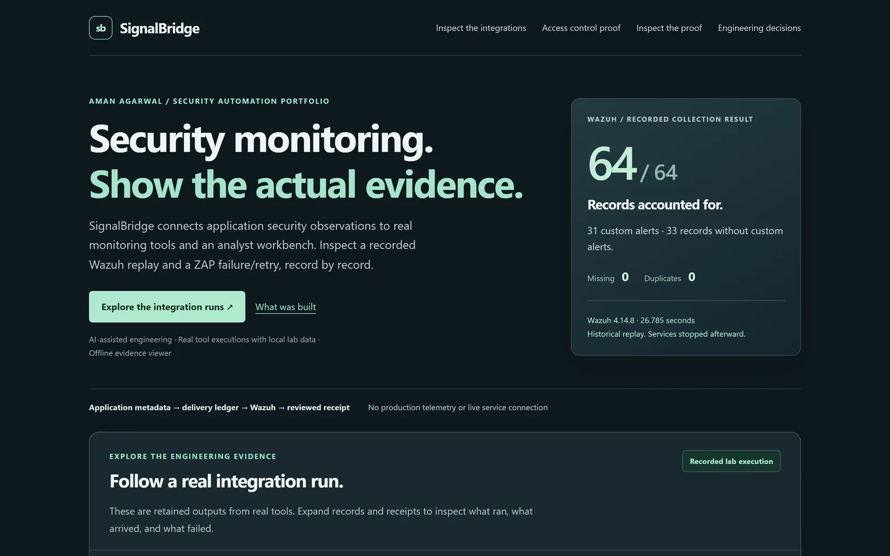
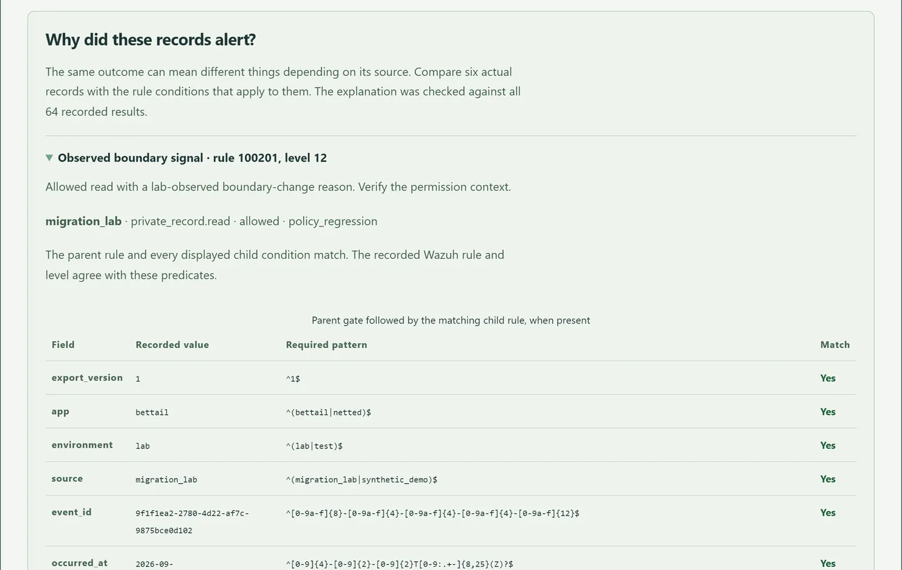
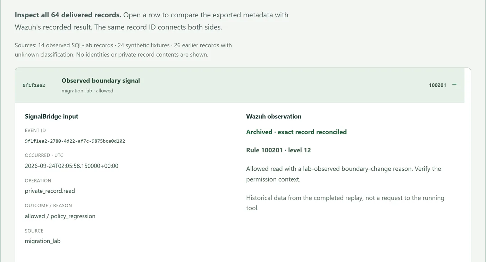

SignalBridge
A workbench for monitoring access control in web apps. It collects signed telemetry, runs detection rules and gives an analyst a console to investigate and record decisions.
Problem
Does access really end after a membership change?
Approach
Retain signed events, source labels and the evidence behind each rule.
Evidence
A recorded 64-event local replay; a reproduced and fixed write race.
Project status
Local, rule-based lab. Three challenge patterns did not alert.

Implementation used AI coding agents under my direction. I set requirements and directed review; the recorded assessments are builder-led.
Decision I directedMove the permission check into the write transaction. The recorded revocation race showed why an earlier access check was insufficient; the case study walks through both paths.
The problem
When someone is removed from a private group, their access should end. Checking that it actually does usually means pulling together an access test, application logs and a review decision from different places.
SignalBridge brings those steps into one tool. I used two of my own apps, BetTail and Netted, as the systems it monitors.
Architecture
The console runs locally behind Waitress on 127.0.0.1. Detection is rule-based, and the running app doesn't use AI.
Explore the control flow Choose a stage
Stage 01 / Source event
What did the application actually observe?
A fixed contract carries pseudonymous actors, resources and closed operation/outcome values. The adapters must avoid encoding sensitive data in permitted fields.
The schema excludes dedicated personal-data and record-content fields; it is not a guarantee that a source tells the truth.
Stage 02 / Signed ingestion
Is the sender known, and is the request valid?
HMAC verification binds the app, key, timestamp and exact body. The collector validates the schema, handles duplicates and commits the queue before acknowledging acceptance.
A valid signature identifies a key. It does not certify the underlying observation.
Stage 03 / Rule evaluation
Why did this event produce a case?
The published snapshot checks repeated unsuccessful private reads and source-labeled reads after a boundary change. Cases retain the triggering evidence.
Slow probing, distributed accounts and missing affected-member context did not alert in the documented challenge.
Stage 04 / Analyst review
Can this person still make the decision?
Viewer, analyst and reviewer roles are scoped per app. Writes re-check membership inside the database transaction; a reviewer cannot approve their own rule proposal.
The demonstrated write race is fixed in the local SQLite workflow. PostgreSQL concurrency behavior is not established.
Design decisions & tradeoffs
Signed ingestion with a fixed schema
Each event is signed with HMAC-SHA-256 over the app, key ID, timestamp and exact body, compared in constant time and rejected after 5 minutes. Bodies are capped at 16 KiB, and unknown, duplicate or missing fields are rejected. The contract excludes dedicated fields for names, emails, IP addresses, tokens and record contents, and validates allowed fields. This reduces accidental collection; source adapters still need to avoid encoding sensitive data in permitted values.
Reliable delivery
Exact duplicates are acknowledged, but a reused ID with changed content returns 409. Each app is limited to 600 new events per minute (429 beyond that). The queue commits before returning 202, and failed work retries with backoff, then moves to a visible dead-letter state after five failures.
Two rules in the published snapshot
R1: one actor is denied (or can't see) 3+ distinct private records within a rolling 5-minute window. R2: an allowed private read is reported after a membership removal or policy regression, which opens a critical-priority case. Each rule shows the exact evidence that triggered it.
Scoped analyst console
Viewer, analyst and reviewer roles are scoped per application, and superusers get no automatic access. The console uses CSRF protection, a no-script CSP, 1-hour HttpOnly SameSite=Strict sessions and login throttling (8 failures per 15 minutes). Reviewers can't approve their own rule changes.
Integrations
Wazuh. I sent application events through a recoverable ledger to a Wazuh 4.14.8 manager running custom rules. In the retained September 25 replay, all 64 records arrived: 31 expected alerts and 33 expected non-alerts, with nothing missing or duplicated. The retained input receipt comprises 14 observed lab events, 24 synthetic events and 26 legacy events whose provenance remains unclassified. In a separate run I restarted the collector twice mid-stream, and no input was lost or duplicated.
OWASP ZAP. When I took the scan target offline on purpose, the run was recorded as failed rather than as a clean scan. A retry then passed with 3 requests and 5 findings across 3 rules. Importing the same report twice doesn't create duplicates.


Recorded results & findings
Historical September 2026 builder-authored checks. They were not rerun for this portfolio revision and are not an independent evaluation.
- 1,083automated tests (1,030 Python, 53 Node), 0 failures or skips
- 15/15offline detection scenarios; 600 benign events, 0 false alerts
- 16/16rule-contract checks in a pre-declared challenge
- 13regression tests covering the access-revocation write race
Scanner-triage scope: the retained triage receipt classifies 18 findings as 16 false positives, one open default-credential finding and one reviewed container-listener finding. The reviewed listener was not a verified deployment result. Credential remediation is documented separately below.
Finding: default password in the lab
Scanner triage found a default database password and containers with no resource limits exposing backend ports. I rotated all 8 database role credentials (32 checks, including rejection of the old default), capped the services' memory and CPU, removed the backend port bindings, and retested every route and service.
Finding: access-withdrawal race
A time-of-check to time-of-use gap let a user whose access had just been removed complete 4 case writes. The fix re-checks the account and role inside the database transaction before locking the record. Moving the check to the write boundary closes this demonstrated gap; it is not evidence of PostgreSQL concurrency behavior, which has not been demonstrated. Cases, rule replay, scanner imports and practice records all use that check now, covered by 13 regression tests.
Limits and next steps
I also added three harder test cases on purpose. None of them triggered an alert:
- Slow probing spread over 6 minutes, which falls outside R1's 5-minute window.
- Probing spread across several accounts, since R1 looks at one account at a time.
- Revocations where the telemetry doesn't identify which member was affected.
For the published two-rule snapshot, the next step is to add more context from the source apps, have someone else write test cases, evaluate continuous collection separately from these recorded runs, and finish the Shuffle SOAR integration, which is paused after a storage startup failure.
AI use. AI coding agents wrote much of the code and documentation under my direction. The app itself doesn't use AI; detection is rule-based and a person decides each case.
Discuss SignalBridge
Ask about the revocation race, event evidence or how a detection reaches the analyst console.